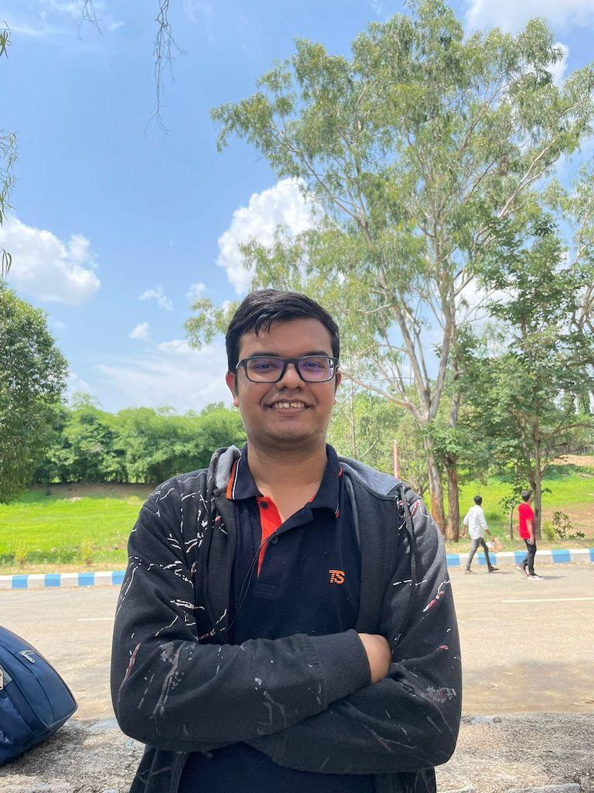
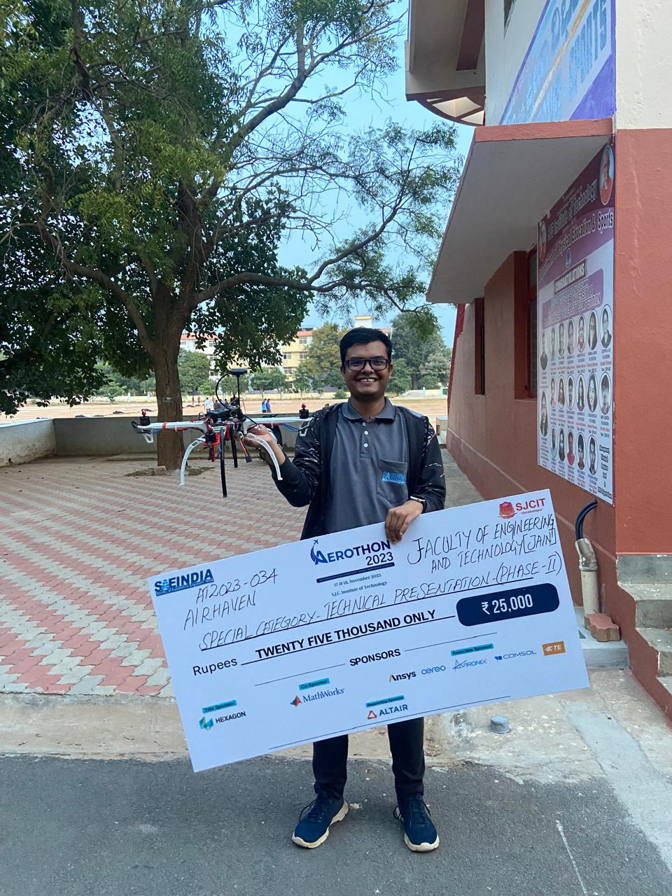

Early aerospace projects
Student aerospace design, systems engineering, flight hardware, and technical competitions.
Aerospace engineer, graduate researcher, and MEXT Scholar working on cislunar space systems, astrodynamics, surveillance, and autonomous spacecraft technologies.
I am a graduate student at the Intelligent Space Systems Laboratory in the Department of Aeronautics and Astronautics at the University of Tokyo.
My work spans cislunar space situational awareness, orbit determination, photometric sensing, multi-body trajectory design, optimization, embedded systems, and spacecraft autonomy.
Before graduate school, I worked on aerospace student projects and competitions through Team Aeros, Team Avadhi, Team Airhaven, and Team Ardra, including the IN-SPACe National CANSAT Competition and SAEIndia Aerothon.

Student aerospace design, systems engineering, flight hardware, and technical competitions.

Participation in the IN-SPACe National CANSAT Competition and related spacecraft systems development.